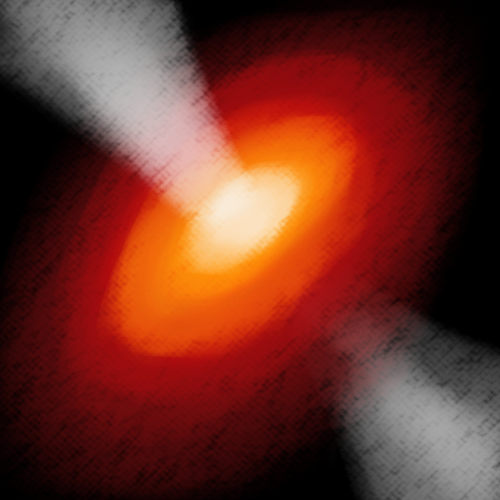

Due to their gravitational fields, protostars gather the cosmic material from the nebula. As they slowly gain mass, which increases their gravitational pull, they generate heat, and nuclear fusion reactions begin to occur in a process known as ignition.
Adjust temperature